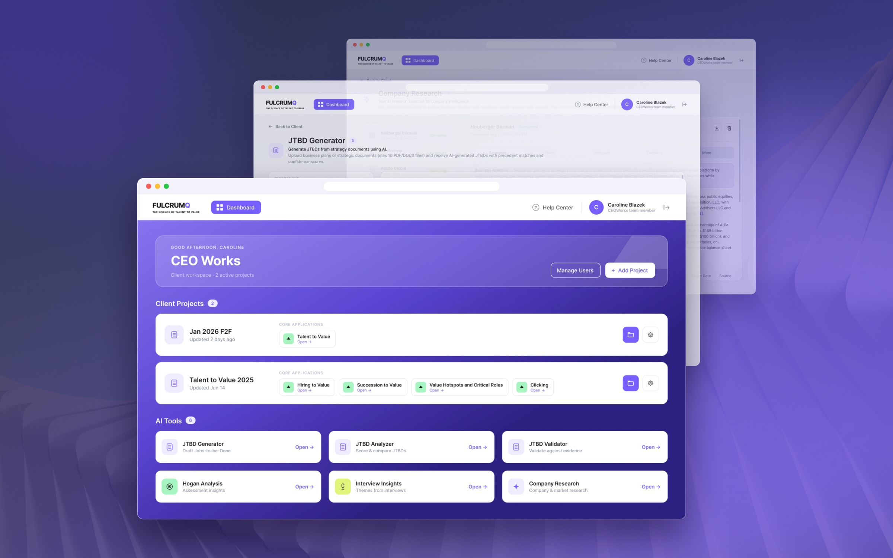
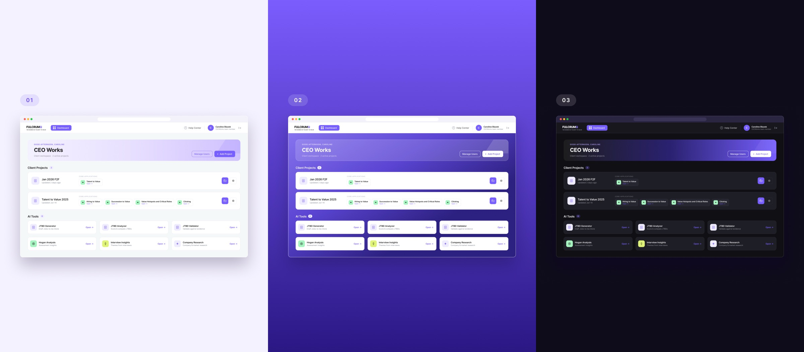
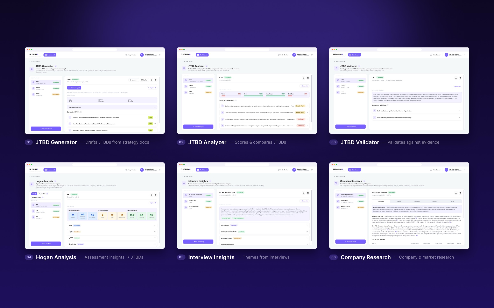
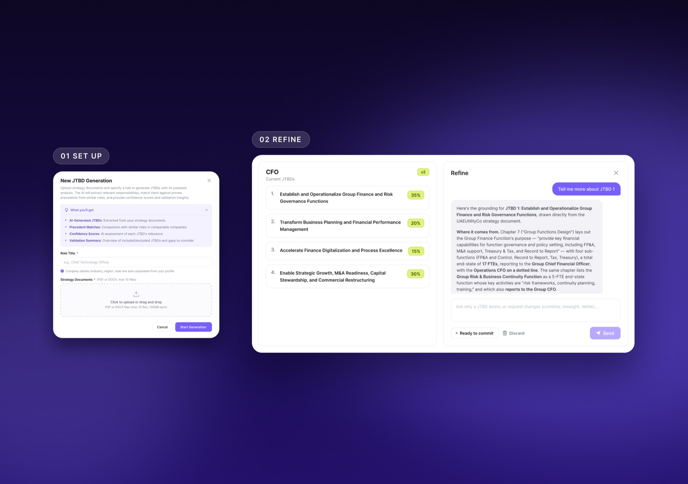
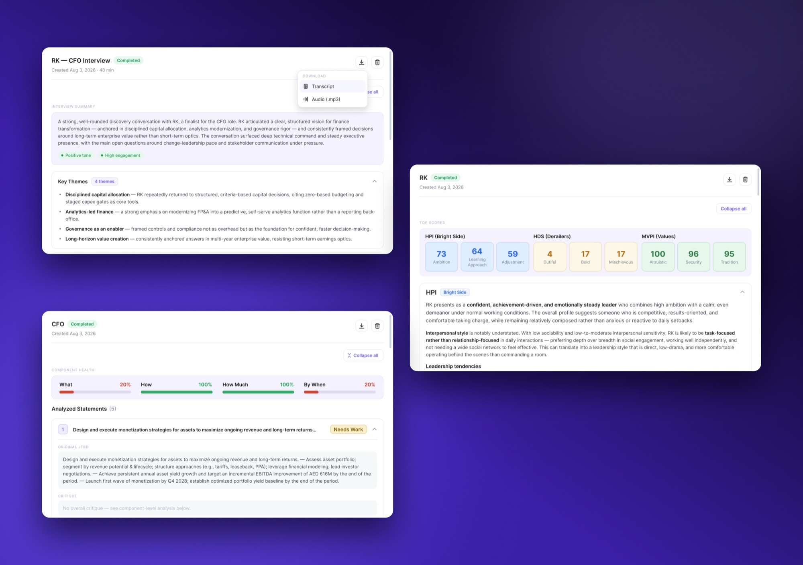
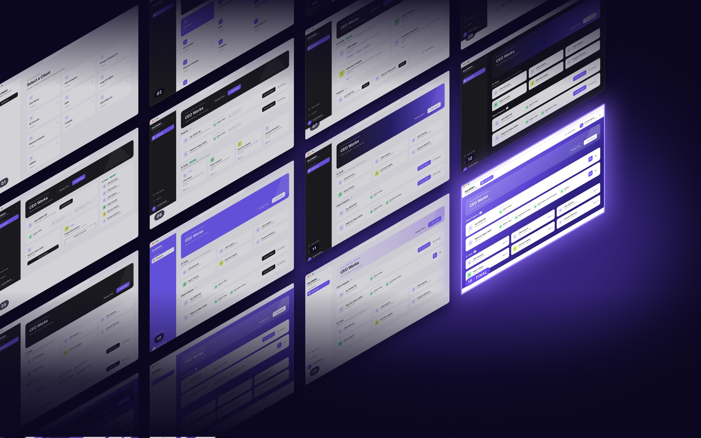
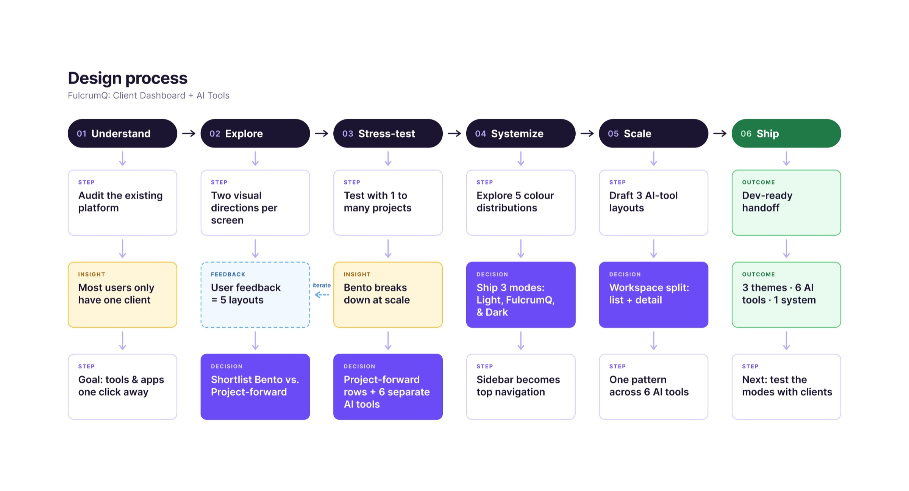

FulcrumQ
- UX Design
- Information Architecture
- Design Systems
As a UX & Product Design Intern at FulcrumQ, I redesigned the client dashboard for a platform used by 123 companies and designed six AI-powered tools that consultants use to analyze talent and organizational performance. Working with my advisor, developers, and the CEO, I took the work from early iterations to developer-ready Figma screens.

The Problem
The existing dashboard made users pick a client before reaching their projects, even though most worked with only one. Core applications were buried inside projects and AI tools lived in the sidebar, fragmenting the experience. My goal was to bring both closer to the landing page and build a layout that flexes to any number of projects while expressing the FulcrumQ brand.




Process
I developed 16 dashboard iterations before narrowing to a Bento layout and a project-forward list, then tested both against realistic workspaces. The project-forward list handled them more clearly, so I refined it with wrapping application chips and a more direct hierarchy. The six AI tools share a split workspace, with runs on the left and results on the right, plus setup and refinement modals for adjusting AI output.
Handoff
I delivered developer-ready Figma screens for the dashboard, with three visual themes and a top navigation, plus layouts and interaction specs for all six tools. The redesign removes the client-selection step, surfaces AI tools on the landing page, and launches applications straight from project rows, all built on reusable components the development team can build from.
